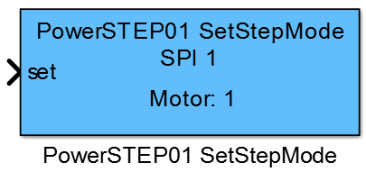
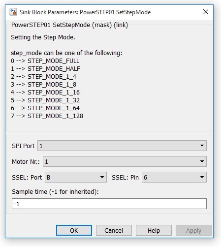

11.1.30. PowerSTEP01_SetStepMode
11.1.30.1. Description
This block writes the new step mode to the selected motor driver. The step_mode can be one of the following:

0 STEP_MODE_FULL 1 STEP_MODE_HALF 2 STEP_MODE_1_4 3 STEP_MODE_1_8 4 STEP_MODE_1_16 5 STEP_MODE_1_32 6 STEP_MODE_1_64 7 STEP_MODE_1_128
{kind=link}
11.1.30.2. Parameters and Dialog Box
SPI Port
specify the SPI port number that should be used by the block.
Motor Number
specifies the motor in the daisychain.
SSEL Port/Pin
specify the mcu pin which is connected to the chip select pin from the driver. This block supports the naming schema: ‘P’ + letter ‘A’, ‘B’, ‘C’, … + ‘_’ + number ‘0’, ‘1’, … ‘15’, e.g. PA_0.
Sample Time
specifies the time interval between samples. To inherit the sample time, set this parameter to -1.
11.1.30.3. Example
–
11.1.30.4. Code Generation
Initialization Function
–
Step Function
creates one line in void <Model Name>_step(void) function
motor_<Motor Number>_spi <SPI Port>P<SSEL Port Name>_<SSEL Pin Number>-> SetStepMode( (StepperMotor::step_mode_t ) <SET>);